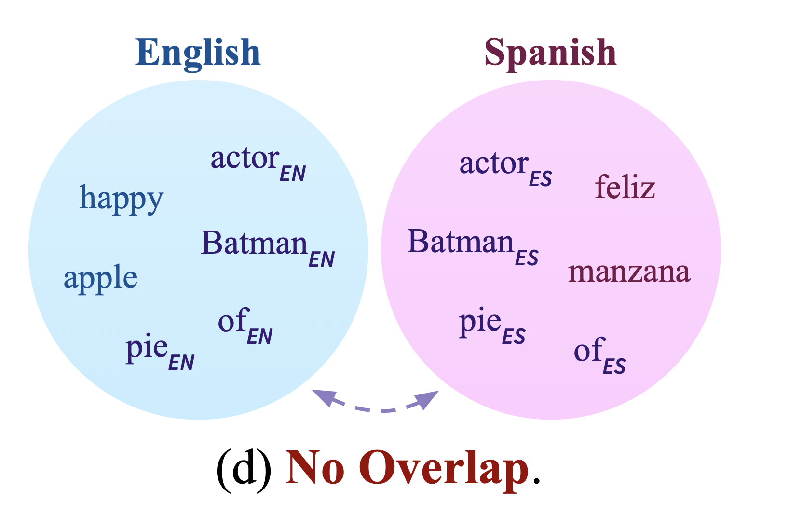
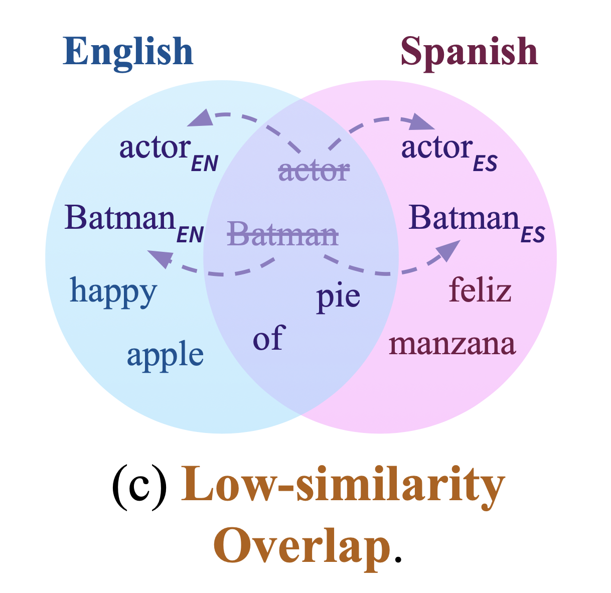
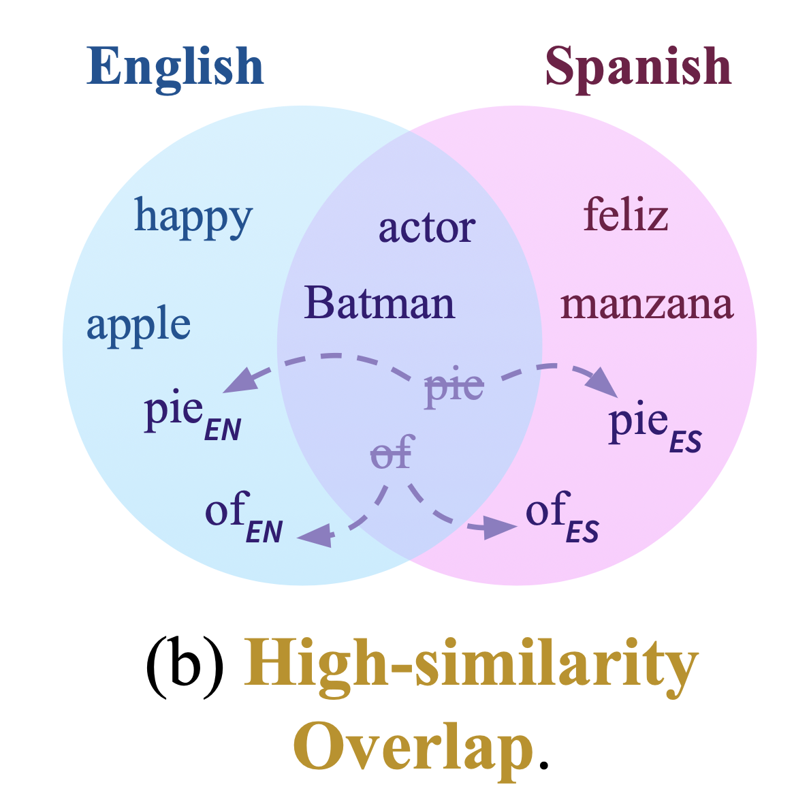
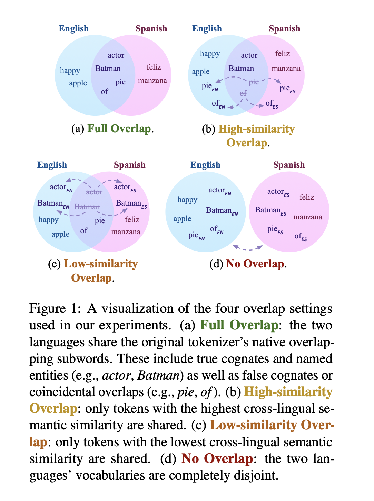
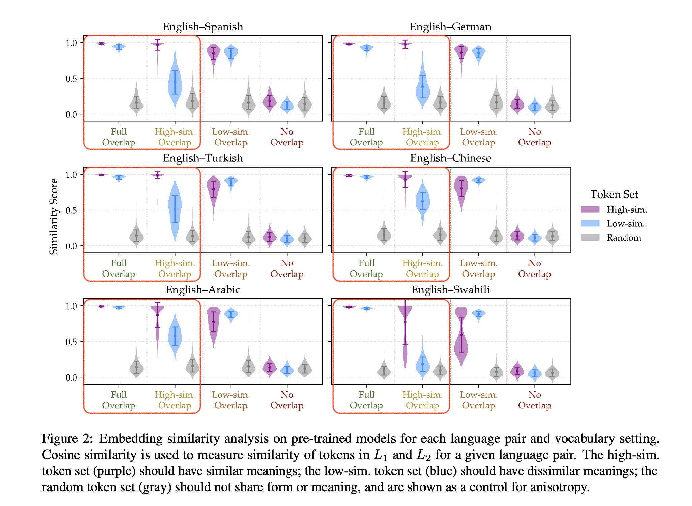
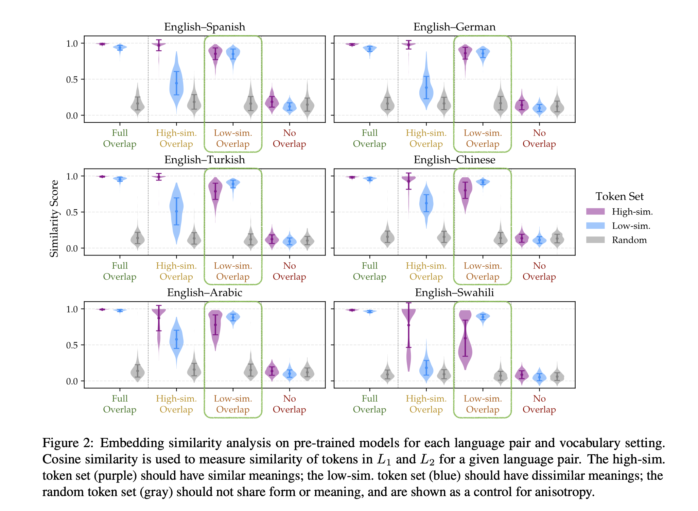
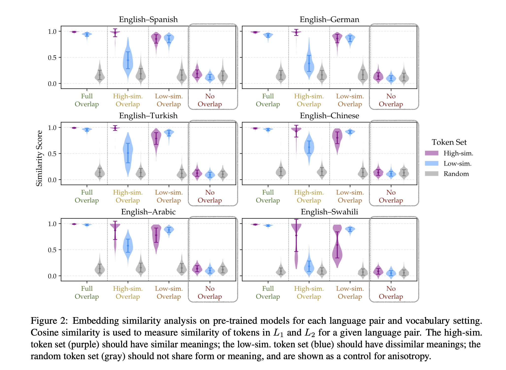

False Friends Are Not Foes: Investigating Vocabulary Overlap in Multilingual Language Models
Kallini et al., EMNLP 2025
Paper Reading — Lingfang Zhang — 2026-05-22
A Familiar Situation
When you learn a foreign language, some words feel instantly familiar
Same form, same meaning → easy to learn
Same form, different meaning → dangerous
Example: Japanese & Chinese
手紙 (tegami) in Japanese → letter
手纸 (shǒuzhǐ) in Chinese → toilet paper
Same characters, completely different meanings
Example: English & German
"gift" in English → present
"Gift" in German → poison
Identical form, opposite meanings
The Same Problem in NLP
Multilingual tokenizers assign the same token ID to words with identical forms across languages
They share the same embedding — regardless of meaning
Does this help or hurt cross-lingual transfer?
Background: What is Token Overlap?
Multilingual tokenizers are trained on concatenated corpora from multiple languages
Words with identical forms naturally get the same token ID
This is called "token overlap"
Examples: named entities (Batman), punctuation, cognates, false friends
Why Does It Matter?
Shared token IDs → shared embeddings
The model sees the same vector for the same form, regardless of language
This could create cross-lingual anchors… or introduce confusion
Prior Work: Mixed Evidence
Some work: overlap helps zero-shot cross-lingual transfer
Other work: overlap hurts performance on certain tasks
Missing piece: does the type of overlap matter?
The Key Question
Not all overlapping tokens are equal
Some share form AND meaning (cognates)
Some share form but NOT meaning (false friends)
How does semantic similarity of shared tokens affect transfer?
Experimental Design Overview
Train bilingual autoregressive models (GPT-2 scale, 85M params)
6 language pairs, all English-centric
4 vocabulary overlap settings
Evaluate on downstream tasks: XNLI, XQuAD
6 Language Pairs
English–Spanish, English–German (closely related)
English–Turkish, English–Arabic (distant)
English–Chinese (different script)
English–Swahili (low-resource)
How to Control Overlap?
Base tokenizer: XLM-R (vocabulary size N)
For L1: all token IDs unchanged
For L2: tokens NOT in the shared set → ID shifted by +N
Tokens IN the shared set → ID unchanged, embedding shared
Finding the Overlapping Tokens
Tokenize both language corpora with XLM-R
Find tokens with identical forms in both languages → native overlap set O
These are the candidates for sharing
Ranking by Semantic Similarity
For each overlapping token, compute cross-lingual semantic similarity
Use contextual embeddings from XLM-R
Rank all overlapping tokens by similarity score
Top half → High-similarity set; Bottom half → Low-similarity set
Condition 1: No Overlap
All L2 token IDs shifted by +N
No shared embeddings between languages
The two languages are completely isolated
Baseline: what happens with zero cross-lingual anchors?
No Overlap: Example
手紙 (Japanese) → token ID: 1042
手纸 (Chinese) → token ID: 1042 + N
Model treats them as completely different words

Condition 2: Low-similarity Overlap
Only tokens with the LOWEST cross-lingual semantic similarity are shared
False friends: same form, different meaning
手紙／手纸 → shared embedding
True cognates: NOT shared
Low-similarity Overlap: Example
手紙 (Japanese, "letter") and 手纸 (Chinese, "toilet paper")
Same token ID → same embedding
The model is forced to represent two different meanings with one vector

Condition 3: High-similarity Overlap
Only tokens with the HIGHEST cross-lingual semantic similarity are shared
Cognates: same form, same meaning
经济 (Chinese) / 経済 (Japanese) → shared embedding
False friends: NOT shared
High-similarity Overlap: Example
经济 (Chinese, "economy") and 経済 (Japanese, "economy")
Same token ID → same embedding
The model correctly links two words that mean the same thing

Condition 4: Full Overlap
All natively overlapping tokens are shared — regardless of meaning
This is what real multilingual models (e.g., XLM-R) do by default
Mix of cognates, false friends, named entities, punctuation
Four Conditions: Summary
No Overlap → complete isolation
Low-sim. Overlap → only false friends shared
High-sim. Overlap → only cognates shared
Full Overlap → everything shared

Downstream Tasks
Zero-shot cross-lingual transfer setup
Fine-tune on English, evaluate on L2
XNLI: natural language inference
XQuAD: question answering
Results Overview
Main finding: any overlap is better than no overlap
No Overlap performs significantly worse across all language pairs and tasks
The type of overlap also matters
Result 1: No Overlap is Always Worst
Across all 6 language pairs, all tasks
XNLI accuracy on L2: No Overlap often drops to ~33-42%
With any overlap: 49-75%
Shared vocabulary is always beneficial for transfer
Result 2: High-sim. > Low-sim.
High-similarity Overlap consistently outperforms Low-similarity Overlap
Especially for typologically distant languages (Chinese, Arabic, Turkish)
Semantically aligned tokens contribute most to transfer
Result 3: Full ≈ High-sim.
Full Overlap and High-similarity Overlap perform comparably
Differences often not statistically significant
Adding false friends on top of cognates doesn't hurt much
But Low-sim. Still Beats No Overlap
Even sharing only false friends helps transfer
Counterintuitive: misleading anchors are still better than no anchors
Any shared embedding creates some cross-lingual structure
Embedding Space Analysis
Before downstream tasks: what do the learned representations look like?
For each overlapping token: measure cosine similarity between L1 and L2 embeddings
Does the model represent the same form similarly across languages?
Embedding Result 1: Full & High-sim. Overlap
High-similarity tokens → very similar embeddings across languages
Low-similarity tokens → more distinct embeddings
Model correctly distinguishes cognates from false friends

Embedding Result 2: Low-sim. Overlap
False friends are forced to share an embedding
Result: model represents them as similar — even though meanings differ
Embedding space is "misled" by the shared token ID

Embedding Result 3: No Overlap
Without any shared tokens, cross-lingual similarity is weak
Even cognates are represented differently across languages
No shared vocabulary → no cross-lingual structure

Key Insight: Overlap Creates Anchors
Shared tokens act as cross-lingual anchors in the embedding space
These anchors propagate structure to neighboring tokens via attention
Even "wrong" anchors (false friends) are better than no anchors
Language Distance Matters
For closely related languages (Spanish, German): Low-sim. and High-sim. perform similarly
For distant languages (Chinese, Arabic): High-sim. has a clear advantage
More distant → less contextual signal to compensate for misleading anchors
Takeaway 1
Shared vocabulary is always beneficial for cross-lingual transfer
No Overlap is significantly worse in every setting tested
Takeaway 2
The semantic similarity of shared tokens matters
High-similarity overlap (cognates) contributes most to transfer performance
Takeaway 3
False friends are not foes
Even semantically misaligned overlap creates useful cross-lingual structure
Better to share than not to share
Practical Implication
Multilingual tokenizer design: don't reduce overlap
Focus instead on other quality factors (e.g., per-language compression rates)
Substantial shared vocabulary remains a good design choice
Limitations & Future Work
Only English-centric language pairs
Single tokenizer (XLM-R)
Future: non-English pairs, more low-resource languages, different tokenizer designs
Thank You
False Friends Are Not Foes: Investigating Vocabulary Overlap in Multilingual Language Models
Kallini et al., EMNLP 2025
Questions?
←
→
1 / 40